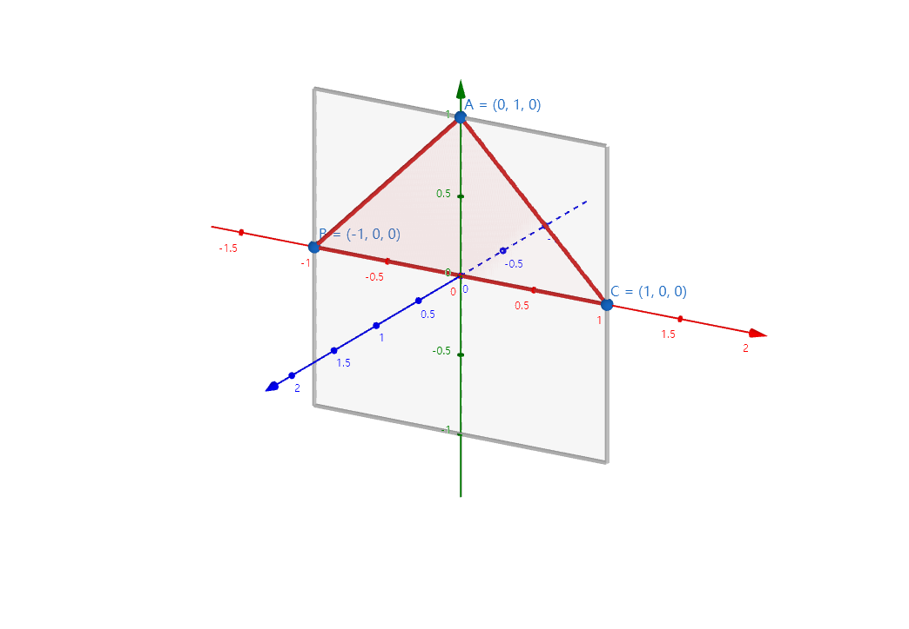
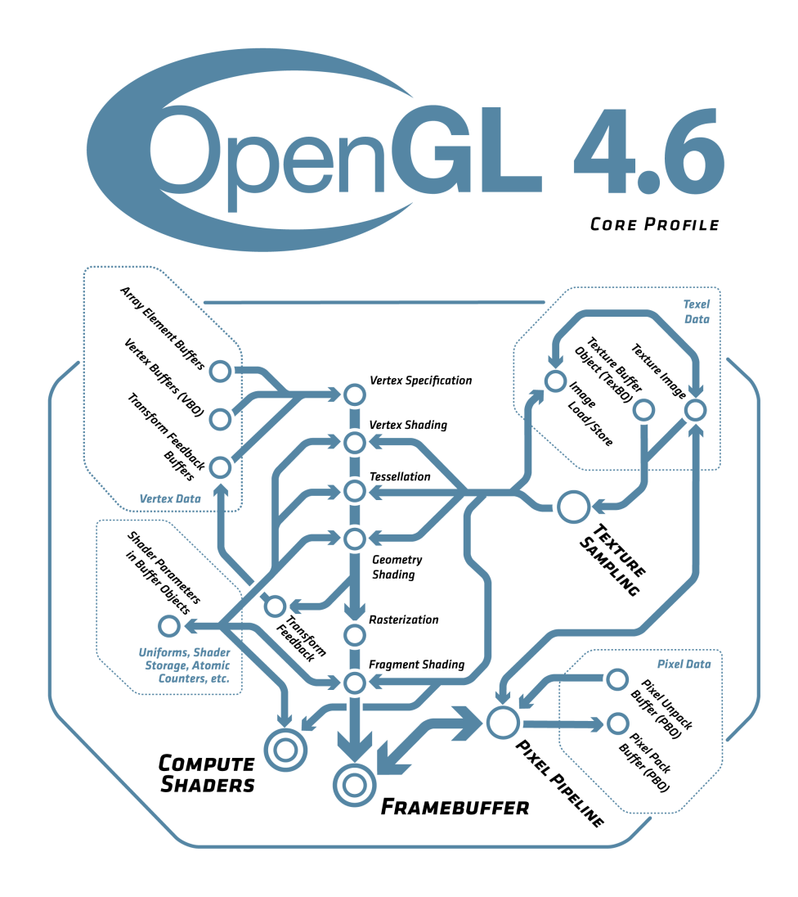
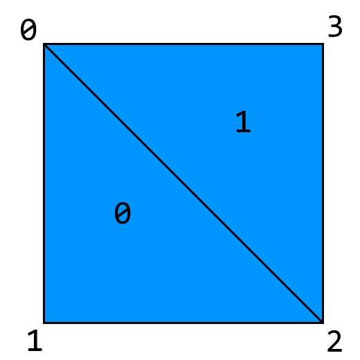

渲染¶
前言¶
上一个章节中，我们成功创建天蓝色窗口。本章节中，我们将添加一个鲜艳的三角形。
理论¶
如图 3.2-1 所示，OpenGL 使用右手坐标系，其中y轴向上，每个图元（Primitive）的各个顶点按照逆时针排序（也可自行设置）。
|  |
|---|
| 图 3.2-1 |
灰色矩形为无投影矩阵（Projection Matrix）时的默认顶点范围。
渲染管线¶
如图 3.2-2 所示，OpenGL 渲染时经过顶点着色、曲面细分、几何着色、光栅化、片段着色等步骤。我们着重关注顶点、片段着色以及左上角的顶点数据。
|  |
|---|
| 图 3.2-2 |
着色器¶
任何一个 OpenGL 程序都离不开着色器（Shader）。着色器是渲染的基本程序。一个着色器类似于 C 程序，编译后由显卡驱动执行。
#version 330
in vec3 in_position;
void main() {
gl_Position = vec4(in_position, 1.0);
}
这是一段着色器的示例代码。它和普通的 C 代码相似，都含有宏、变量、函数等，只是主函数的返回值为void。
顶点数据¶
有了着色器，当然还要有顶点数据。顶点数据（Vertex Data）定义了一个或多个图元的顶点位置、颜色等，并传递到着色器进行进一步处理。
float[] vertexData = {
-0.5f, 0.5f, 0.0f,
-0.5f, -0.5f, 0.0f,
0.5f, -0.5f, 0.0f,
0.5f, 0.5f, 0.0f,
};
上面的数组定义了一个四边形。然而，OpenGL 不能直接绘制四边形。我们必须手动将其细分为多个三角形，或是使用元素缓冲对象（Element Buffer Object，简称 EBO）。
EBO 定义了绘制图元时使用的顶点。索引从 0 开始。
int[] indexData = {
0, 1, 2, 2, 3, 0,
};
如图 3.2-4 所示，该四边形会分为两个三角形进行绘制。
|  |
|---|
| 图 3.2-4 |
实践¶
了解以上概念后，我们就能开始编写了。